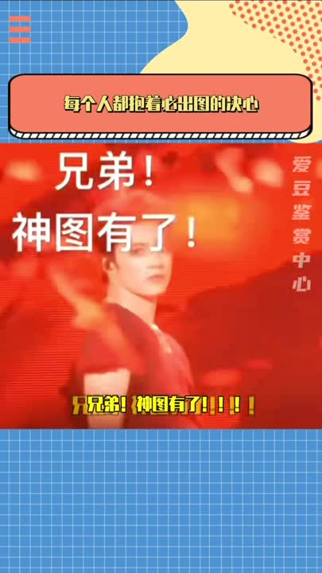
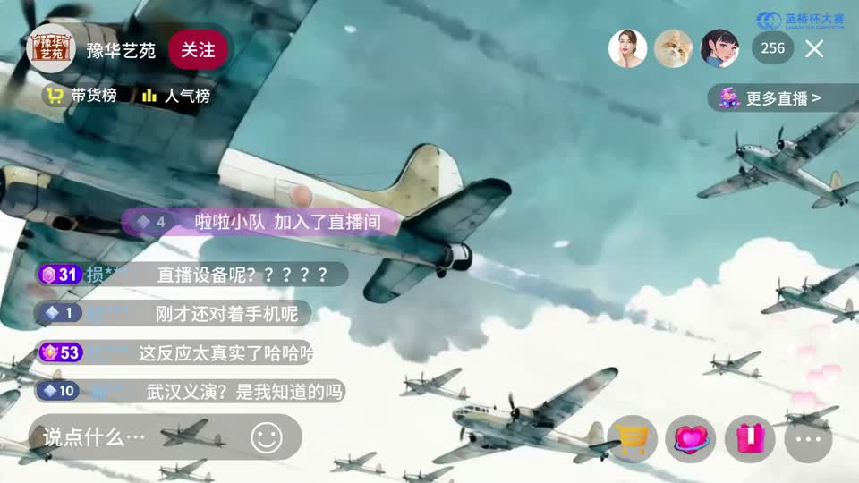
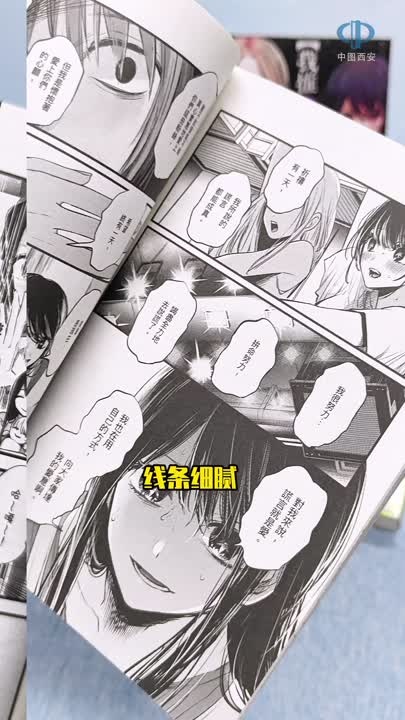
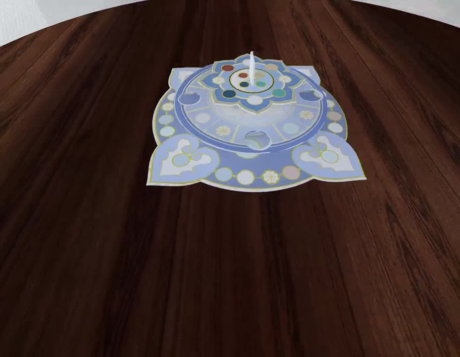
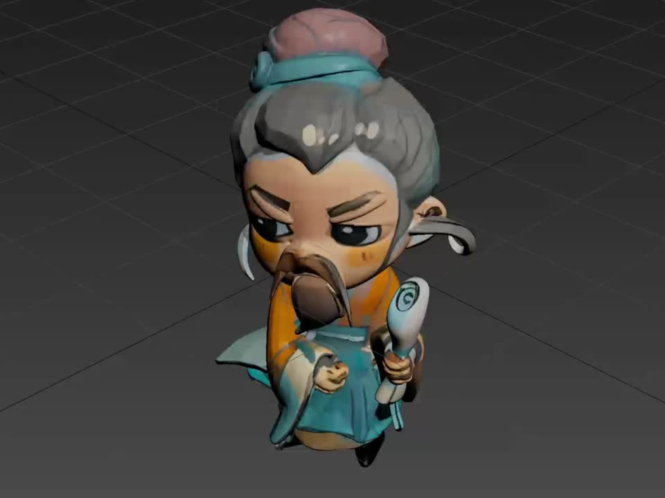

哦 香雪
哦 香雪视频创作 ↗
短片、公益、口播、片头与宣传片，记录不同形式的影像实践。
影像、视觉与互动设计。进入一个分类，继续探索其中的作品。
哦 香雪短片、公益、口播、片头与宣传片，记录不同形式的影像实践。

泛娱乐视频 · 10围绕娱乐话题与人物素材展开的短视频内容。

豫见戏魂从短片叙事到产品视觉，探索 AI 辅助创作的不同表达。
视频封面、卡牌与版式练习，呈现信息与画面的组织方式。
在花草、光线与日常场景中，留下一些细小的观察。

我推的孩子漫画与图书相关的商品内容，结合实拍与短视频表达。

古物藏理，游艺启思文创与互动游戏：从主题构想到具体的观看和体验方式。

古代科学人物 · 模型展示古代科学人物模型的造型与展示，关联文创项目中的角色设计。